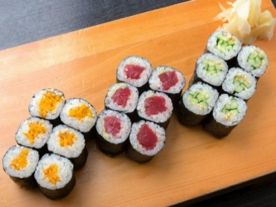
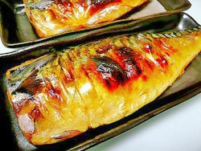

Put rinsed rice and water to cook with rice cooker
After making steamed rice, transfer the rice into the bowl
While put in the sushi vinegar ( mixed with vinegar, sugar, and salt)
Cooling down the sushi rice gently flip the rice in between slices repeatedly until it is cooled
Keep the rice covered with a damp towel for without dry
Sushi Roll Recipe

Ingredients
Some Sushi rice
A main ingredients Tuna, Cucumber, Avocado, Japanese pickles.
Some Nori (sea weed)
Bamboo sushi rolling mat
Soy sause
Instructions
Tuna, Cucumber, and Avocado :
Prepare Sushi Rice
Cut both ends of the cucumber in 1/4 lengthwise to have 4 strips.
Cut the tuna into 1/4-1/2” slices and cut into 1/4-1/2” hick long strips.
Cut half avocado and take out the seed.
1/4 slice the avocado
Make vinegared hand-dipping water by combining 1/4 cup water and 1 Tbsp rice vinegar in a small bowl for using to prevents rice form sticking to your hands.
Cut nori in half
Place the sushi mat on a working surface and put the nori half sheet on the mat. The shiny side of nori should face down.
Moisten your hands before you touch sushi rice
Scoop the amount of sushi rice on the bamboo mat flat to spread evelny.
place the filling tuna, cucumber or avocado at he middle of rice.
Roll the mat over the sushi rice gently shape and tighten.
Cut a sushi roll with wetting your knife.
Fish Grill Recipe

Ingredients
Any kinds of fish
Salt
Instructions
Take off the scales of the fish skin with knife
Cut fish stomach for taking out the internal organs with rinsing water